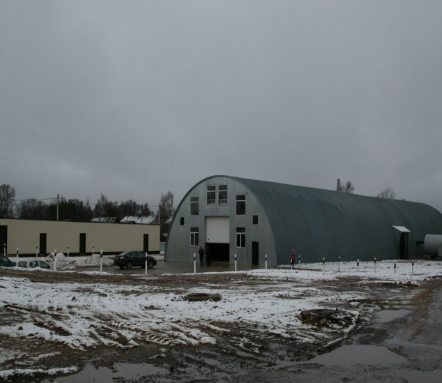
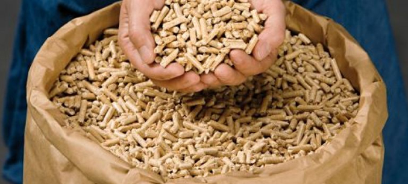
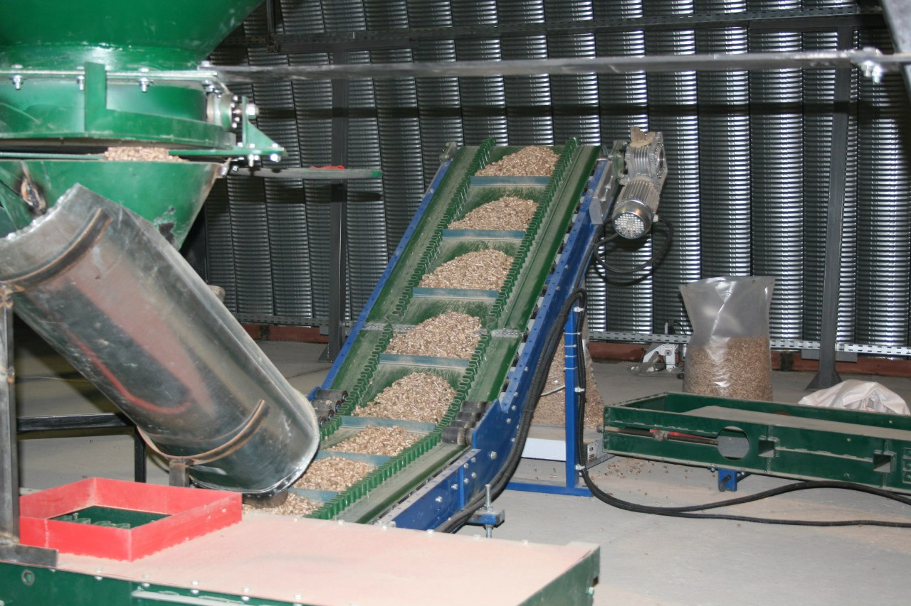

Оленино
Экономика
ЗАО «Экзот» (деревообработка)

Зарегистрирована в 2001 году. Основным видом деятельности является: "Лесозаготовки". Организация также зарегистрирована в таких категориях, как: "Производство пиломатериалов».
ООО «Любятино-2»
 
В Оленино открылось производство топливных гранул (пеллет) ООО "Любятино-2". Это первое предприятие за много лет, построенное в Оленинском районе "с нуля", с чистой площадки. Строительство шло около года. Основным видом деятельности компании является Производство топливных гранул и брикетов из отходов деревопереработки.
